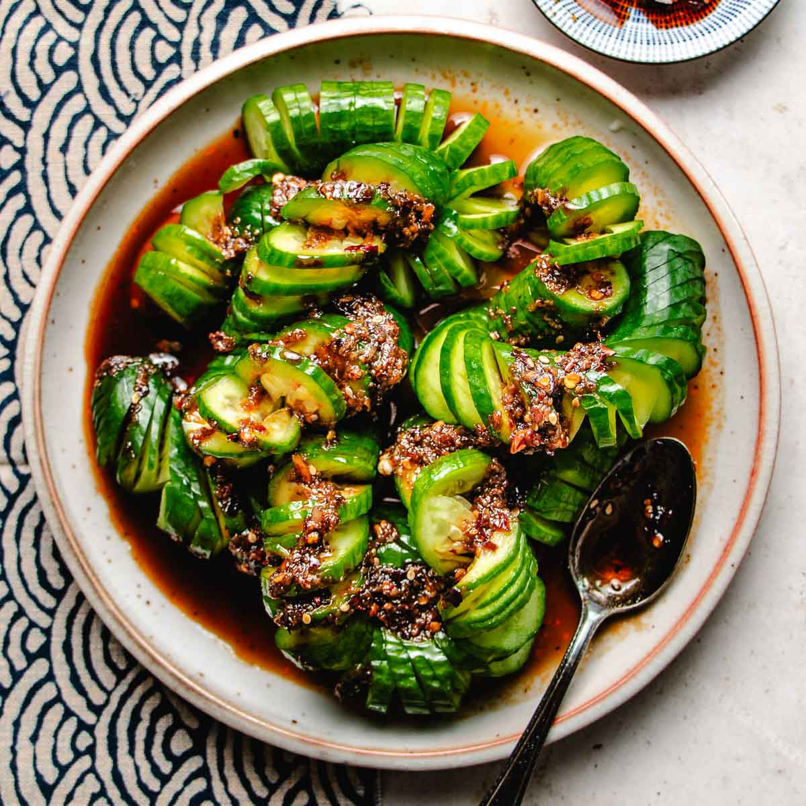

Spicy Cucumber Salad

Description
A refreshing, light salad with a little kick to keep you on your feet. With a prep time under 25 min, this recipe can be made again and again for friends and family.
Ingredients:
- 2 cucumbers
- 2 teaspoons of salt
- 1 tablespoon of soy sauce
- 2 cloves of minced garlic
- 1 tablespoon of rice vinegar
- 1 tablespoon of chili oil
- 1 tablespoon of white granulated sugar
- 1 teaspoon of sesame oil
Optional:
- 1 teaspoon of sesame seeds
- 2 tablespoons of finely sliced green onions